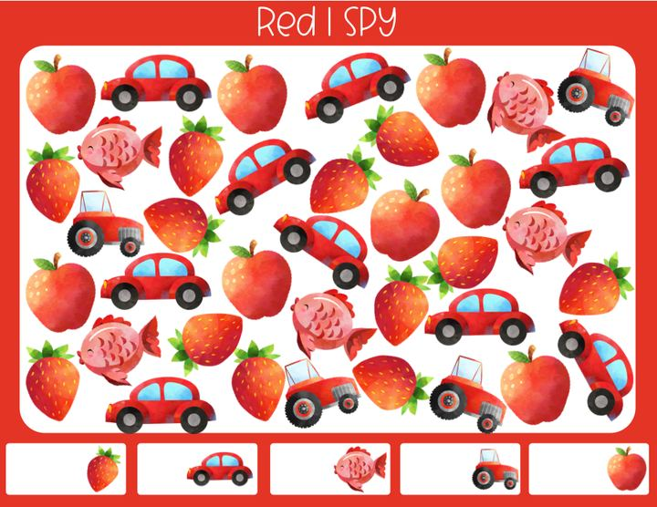
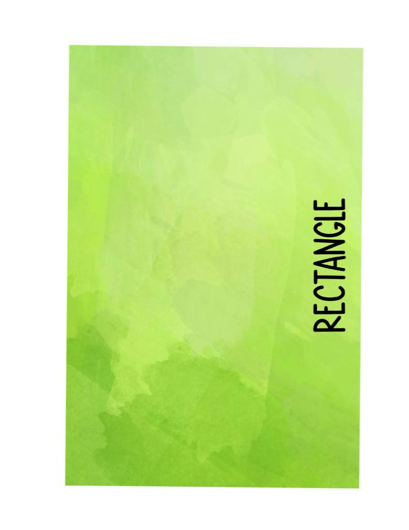
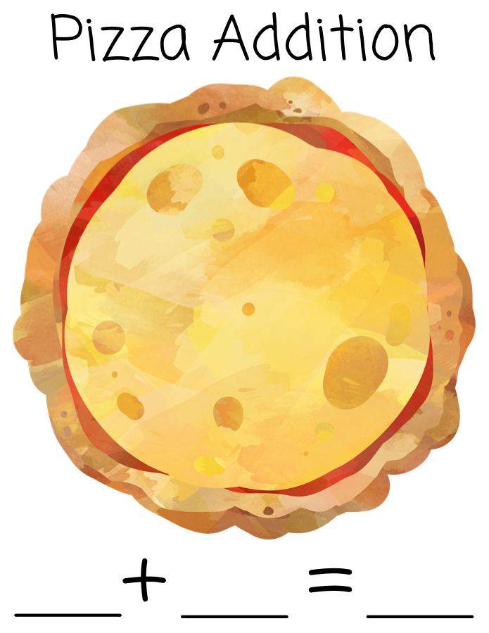
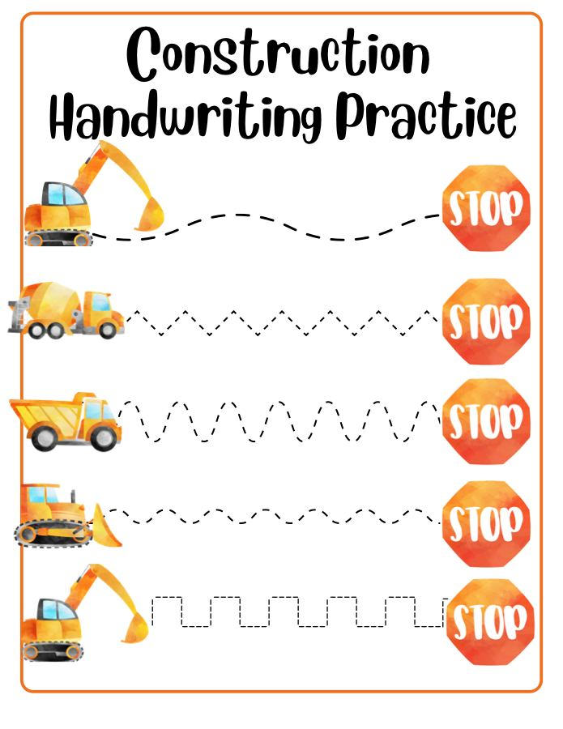
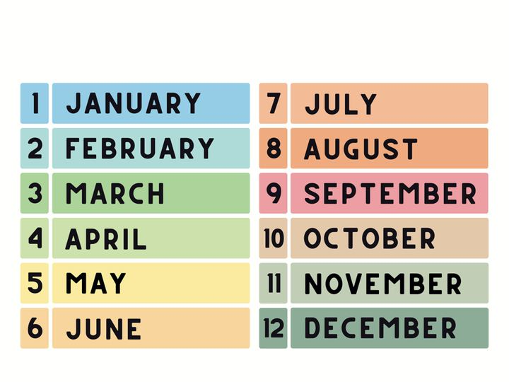
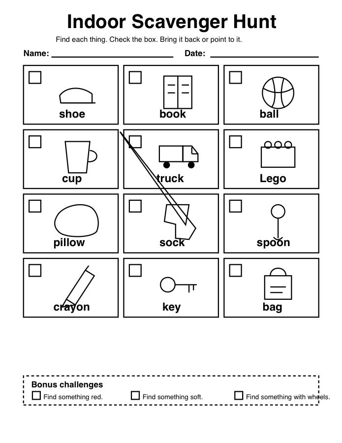

Color I Spy
A visual search page for spotting colors and naming what you find.
download PDF
Shape Sort
Cut, match, and sort simple shapes into the right homes.
download PDF
Pizza Addition
A playful addition page with pizza pieces and small sums.
download PDF
Construction Packet
Construction-themed pages for counting, matching, and coloring.
download PDF
Months Poster
A bright reference poster for learning the months of the year.
download PDF
Indoor Scavenger Hunt
A simple hunt for everyday things when everyone needs a reset.
download PDF